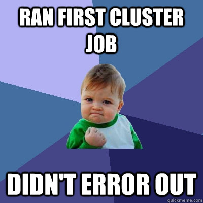
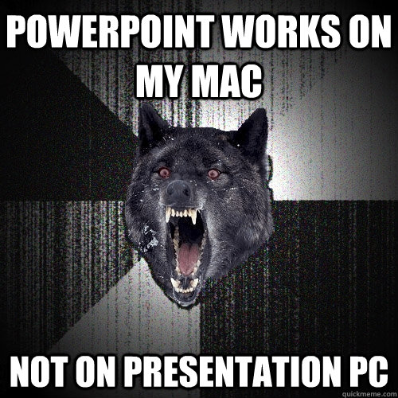
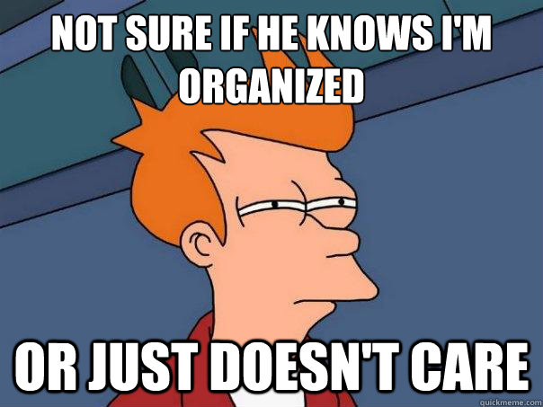

First off, calm down.
- You can't learn everything at once.
We all learned by asking others
- Don't worry, someday it'll be you on the other end
John Muschelli
First off, calm down.
We all learned by asking others
Get a Text Editor - with text highlighting 

Sweave - http://www.stat.uni-muenchen.de/~leisch/Sweave/
knitr http://yihui.name/knitr/ - Sweave upgrade
slidify - make presentations as cool as this one (or try) http://slidify.org/
git http://git-scm.com/downloads
pandoc - http://johnmacfarlane.net/pandoc/
You may say to yourself 2 things
git knitr or Sweave, I can find my plots/analysis/results gitgit initgit add . (the . is intentional - saying all files)git commit -m "Comments are delicious"git push origin master
git remote add https://github.com/user/repo.git